Capítulo 4
INDÚSTRIA CALÇADISTA: MÚLTIPLOS FATORES GENÉTICOS
QuestãoPor que as grandes indústrias calçadistas estão investindo em animais geneticamente selecionados?
Contextualizando
O interesse pela qualidade do couro inicia antes mesmo do nascimento do gado. Leia a notícia abaixo:
O empenho no varejo que consolidou marcas como Ipanema, Melissa e Rider, fez do Grupo Grendene referência no setor calçadista, assumindo a liderança no segmento. Com a mesma dedicação a Grendene investiu na criação de touros nelore provados, tornou-se um dos maiores criatórios de reprodutores do Brasil e atingiu resultado genético capaz de atender a demanda de propriedades rurais, das mais diferentes regiões. Os touros desenvolvidos pela marca são consagrados pelo mercado da pecuária brasileira e considerados ideal para o Pantanal, região que coloca os animais sob adversas situações e exige resistência genética e morfológica. Depois de criados, recriados e provados no Pantanal de Cáceres, Mato Grosso, a Grendene apresentará 200 reprodutores aos pecuaristas da região de Corumbá, Mato Grosso do Sul, como alternativa para avançarem na produtividade e qualidade do rebanho. “É nítida a diferença quando se troca um boi, de boiada comum, por um touro PO, aprovado por diferentes programas de avaliação. A região pantaneira exige características específicas, que somadas ao desempenho reprodutivo, expressão racial e bons aprumos, fazem a diferença na rentabilidade”, destaca o diretor de pecuária da Nelore Grendene, Ilson Corrêa. “Em mais de 40 anos de pesquisa e emprego de tecnologias, identificamos touros diferenciados, que foram selecionados, devido sua força e eficiência. Verificamos que esses animais dotavam genética superior em todas suas características reprodutivas”, explica o diretor. (Indústria de touros: Líder no setor calçadista investe em genética nelore para o Pantanal de MS, SRCG, Acesso em < https://srcg.com.br/noticia/industria-de-touros-lider-no-setor- calcadista-investe-em-genetica-nelore-para-o-pantanal-de- ms/12537/>, 14/02/2020)
Você percebe como coisas tão diferentes quanto a produção de um calçado e os mecanismos de hereditariedade estão relacionados? Quem trabalha com isso tem certeza: para obter um couro de qualidade os cuidados começam nas características genéticas do animal que será abatido.
A seleção, em geral, acontece a partir dos machos, pois nos animais existe uma diferença genética entre os sexos. No caso dos mamíferos (como o gado), os machos possuem um cromossomo exclusivo, por isso, selecionar a partir dos machos significa selecionar todos os cromossomos da espécie. O que não acontece se a seleção for feita a partir das fêmeas.
(RE)CONSTRUINDO CONHECIMENTOSVocê deve lembrar que o DNA está organizado dentro da célula na forma de cromossomos. Cromossomos nada mais são do que uma forma de organizar o longo fio de DNA. O número de cromossomos varia de espécie para espécie, o conjunto de todos os cromossomos é chamado de cariótipo. Nós, humanos, possuímos 46 cromossomos organizados em 23 pares. Destes, 22 pares contém informações sobre o corpo em geral (chamados de cromossomos autossômicos) e um par contém informações relacionadas ao sexo biológico, chamados de cromossomos sexuais (figura 28). Sendo assim, os autossomos contêm genes que expressam características cuja frequência é igual em homens e mulheres. O par sexual possui genes cuja expressão é maior em um dos sexos.
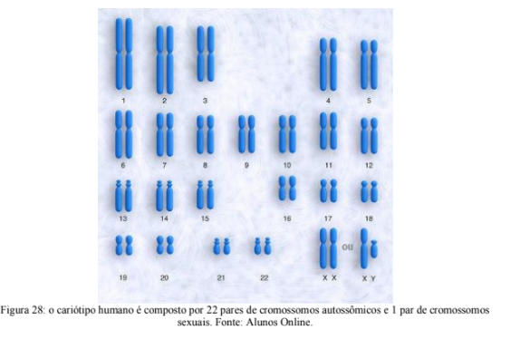No cariótipo feminino os cromossomos sexuais são os mesmos (XX), no cariótipo masculino há um cromossomo X e outro Y. É o cromossomo Y que define o sexo biológico de uma pessoa, dizemos que fenótipos influenciados por genes nos cromossomos sexuais são características ligadas ao sexo.
HERANÇA LIGADA AO Y (RESTRITA AO SEXO)
Uma pequena porção do cromossomo Y é diferente do cromossomo X. Com isto, os genes ali situados só podem ocorrer e ser transmitidos no sexo masculino. Um exemplo na espécie humana é o gene responsável pela formação do órgão reprodutor masculino. Trata-se de um alelo raro, mas que quando está presente sempre é transmitido pelo pai para todos os filhos do sexo masculino.
Herança ligada ao X (ligada ao sexo)
Na espécie humana, existem vários genes ligados ao sexo. É o caso dos genes que determinam o daltonismo e a hemofilia. Como o cromossomo sexual X está presente ambos os sexos, os genes situados ali podem ocorrer e ser transmitidos por homens e mulheres.
O daltonismo é a incapacidade de distinguir certas cores, geralmente, o daltônico confunde o verde e o vermelho (figura 29). É um distúrbio causado por um gene recessivo localizado na porção do cromossomo X sem equivalência no Y, o alelo Xd determina o daltonismo, enquanto o alelo dominante XD determina a visão normal. Uma mulher de genótipo XDXd, embora possua um gene para o daltonismo, não manifesta a doença, pois se trata de um gene recessivo. Ela é chamada de portadora do gene para o daltonismo. Um homem de genótipo XdY, apesar de ter um único alelo Xd, manifesta a doença pela ausência do alelo dominante capaz determinar a visão normal de cores.
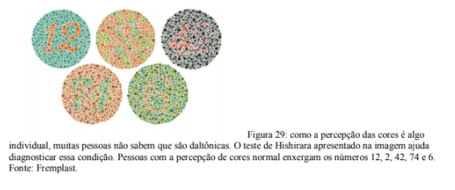A hemofilia (outro exemplo de herança ligada ao cromossomo sexual X) é a falta de uma proteína sanguínea chamada de fator VIII de coagulação. Os hemofílicos podem ter hemorragias severas. O padrão de herança é o mesmo do daltonismo (figura 30).
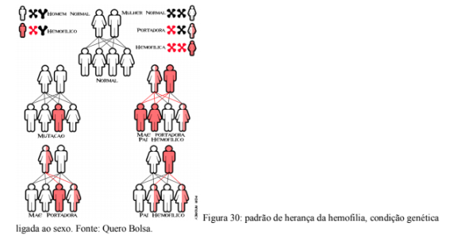VOCÊ SABIA?
Ninguém está livre de, em uma emergência, necessitar de uma transfusão sanguínea. Os hospitais vivem uma rotina diária de indisponibilidade de sangue nos seus bancos. Várias empresas públicas e privadas fazem campanhas para incentivar a doação de sangue (figura 31).
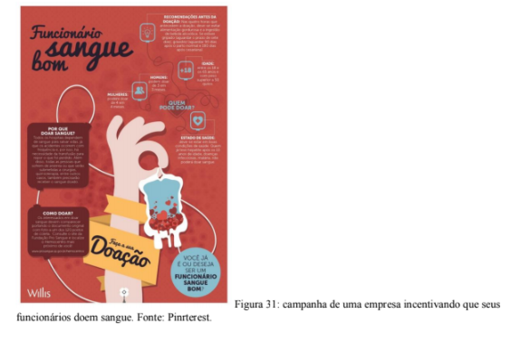A transfusão de sangue deve ser específica para evitar rejeição, por isso é importante que os bancos de sangue tenham estoques abastecidos com todos os tipos sanguíneos. Infelizmente, isso não é uma realidade.
Doe sangue!
A GENÉTICA DO SANGUE
A perda de sangue, durante muito tempo, representou um grande problema para a humanidade.
O corpo humano possui em torno de 70ml de sangue para cada quilo de massa humana. Isto corresponde, em uma pessoa de 1,80m e cerca de 80kg, a aproximadamente 5,5L. Caso tenha uma hemorragia, essa pessoa poderá morrer quando 40% do volume de sangue deixar o seu corpo ou sair dos vasos sanguíneos para as cavidades internas. Ela morrerá de choque hipovolumênico, ou seja, com 59% de sangue no seu corpo, o coração não consegue bombea- lo para todas as partes do corpo.
RELEMBRANDO A HISTÓRIA
Durante vários séculos tentou-se transfundir sangue de animais para seres humanos. Após 100% de mortes envolvendo esta prática, tentou-se o voluntariado humano e, mesmo assim, não havia garantia de sobrevivência (figura 32).
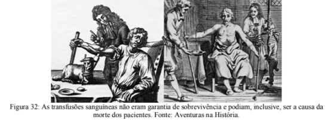Somente no ano de 1900 as mortes envolvendo transfusão de sangue cessaram. O médico austríaco Karl Landsteiner estudou os glóbulos vermelhos e detectou um complexo de moléculas existentes na membrana plasmática de tais células. Descobriu que existem quatro tipos sanguíneos, conhecidos como sistema ABO. Hoje se sabe da existência de mais de 25 grupos sanguíneos, ainda não há clareza da função da maioria desses grupos.
Existem na espécie humana três genes alelos para a determinação do grupo sanguíneo pelo Sistema ABO, com graus diferentes de dominância entre si, e que determinam quatro tipos sanguíneos diferentes (A, B, AB e O). Como isso é possível?
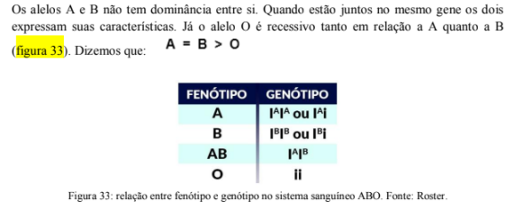Esses três alelos são responsáveis pela produção de uma glicoproteína que fica aderia à membrana celular das hemáceas (glóbulos vermelhos do sangue), recebe o nome de antígeno (ou aglutinogênio). Os alelos A e B codificam antígenos diferentes, enquanto que o alelo O não codifica antígeno algum. Os indivíduos de sangue A apresentam nas suas hemácias antígeno do tipo A e produzem anticorpos no plasma que atacam os do tipo B (chamadas de aglutininas anti-B).
Os indivíduos de sangue B apresentam nas suas hemácias antígeno do tipo B e produzem anticorpos anti-A.
Nas pessoas que apresentam sangue AB os dois tipos de antígenos são observados nas hemácias, e não ocorre a produção de anticorpos. Por isso, os indivíduos AB podem receber qualquer tipo de sangue.
Já os indivíduos do tipo O não apresentam antígenos e têm no seu plasma anticorpos anti-A e anti-B (figura 34), por isso, só podem receber sangue de uma pessoa do tipo O. Para os indivíduos do grupo O qualquer outro tipo de sangue acaba funcionando como um corpo estranho e os seus anticorpos provocam a aglutinação das hemácias recebidas, podendo levá- los à morte.
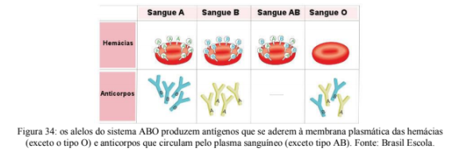VOCÊ JÁ PENSOU SOBRE ISSO TAMBÉM?
Ao se realizar uma transfusão de sangue, deve-se determinar os grupos sanguíneos do doador e do receptor, para evitar as reações antígeno-anticorpo, que podem levar o receptor à morte devido à aglutinação de suas hemácias. A aglutinação acontece quando as hemácias se unem umas as outras formando um aglomerado de células que prejudicam a circulação sanguínea.
Por isso, o tipo O é o que mais se presta à transfusão sanguínea, pois não apresenta antígenos, podendo doar sangue para qualquer um dos outros tipos e para si mesmo. É chamado de doador universal. O tipo AB não apresenta aglutinina e, por isso, pode receber sangue de todos os tipos. É chamado de receptor universal (figura 35).
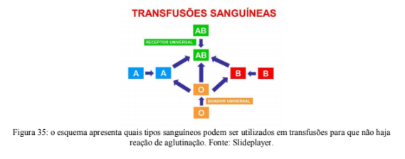E O POSITIVO E NEGATIVO?
Existe outro tipo de proteínas na superfície das hemácias que também impacta nas características do sangue, conhecidas como fator Rh. Pessoas que possuem em suas hemácias o fator Rh sofrem reação de aglutinação em contato com anticorpos anti-Rh; tais pessoas são classificadas como Rh positivas (Rh+). Aquelas em cujo sangue não há aglutinação em contato com o anti-Rh, são classificadas como Rh negativas (Rh-), pois não possuem em suas hemácias o fator Rh.
Os anticorpos anti-Rh normalmente não existem no sangue das pessoas. Evidentemente, os indivíduos Rh+ são incapazes de fabricá-los, caso contrário provocariam aglutinação de suas próprias hemácias. Os do tipo Rh-, em geral, não têm anticorpos anti-Rh no seu sangue, mas podem vir a apresentá-los caso entrem em contato com hemácias de indivíduos Rh+, o que pode ocorrer é que se uma pessoa Rh- receber uma transfusão de sangue de outra Rh+, a entrada de hemácias contendo o antígeno Rh desencadeia a resposta imunológica, com produção de anti-Rh. Além disso, a pessoa fica sensibilizada, em decorrência da chamada memória imunológica. Caso ela receba uma nova transfusão de sangue Rh+, ocorrerá a aglutinação e destruição das hemácias do doador Rh+ no sangue do receptor Rh-, com graves riscos para o receptor.
A genética do fator Rh segue um padrão clássico de dominância, onde indivíduos positivos podem ser RR ou Rr e indivíduos negativos somente serão rr (figura 36).
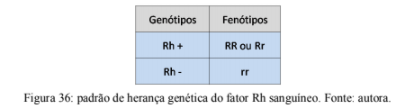 VOCÊ SABIA?Eritroblastose fetal é uma doença grave causada por incompatibilidade materno-fetal (mães Rh- com filhos Rh+) que exige saber o fenótipo de toda família antes do parto. As mães Rh- tendem a produzir anticorpos anti-Rh a partir do contato com o sangue Rh+ de um primeiro bebê. Estes anticorpos podem entrar em contato com o sangue de um segunda criança e provocar a doença hemolítica do recém nascido (figura 37), ou seja, este segundo bebê pode desenvolver uma anemia severa e, muitas vezes, fatal
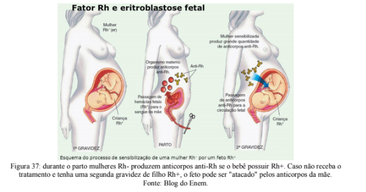O contato entre o sangue do bebê e da mãe acontece durante o parto, quando algumas hemácias do bebê podem entrar na corrente sanguínea da mãe. O problema é resolvido com a aplicação de anticorpos na mãe durante o parto, que destruirão os glóbulos vermelhos do primeiro bebê que eventualmente tenham entrado no seu sistema, impedindo que ela possa fabricar os seus próprios anti-Rh.
Conhecer os mecanismos de herança genética e seus impactos no organismo pode revolucionar a vida das pessoas. É possível que múltiplos fatores genéticos estejam envolvidos na manifestação de determinadas características e o investimento em pesquisas a fim de elucidar esses processos tem sido essencial para o desenvolvimento de diversos setores, como o caso da indústria calçadista mencionado na abertura desse capítulo.
AÇÃO E REFLEXÃO
Leia o infográfico abaixo (figura 38):
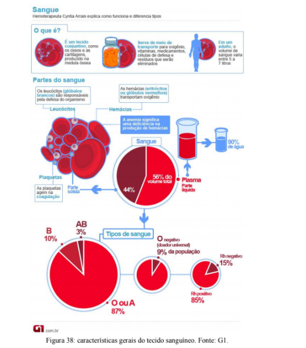As informações apresentadas acima nos fazem perceber que apesar de quase 90% das pessoas possuírem tipo sanguíneo O ou A, apenas 9% possuem tipo O negativo. Qual o impacto disso no momento de uma transfusão de sangue?
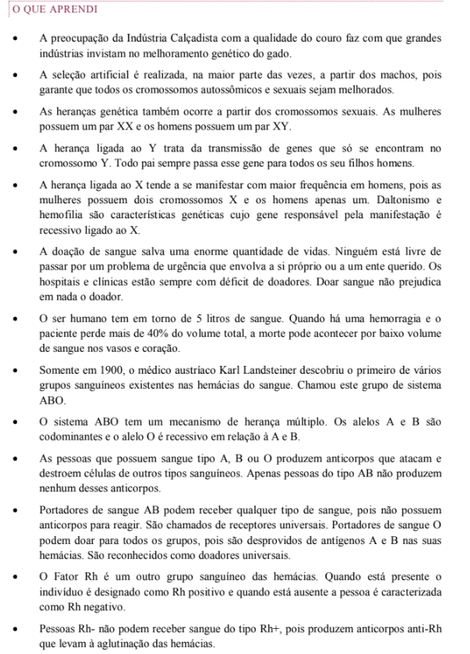